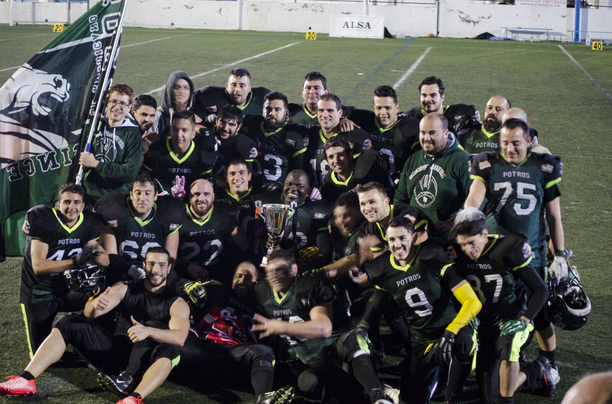
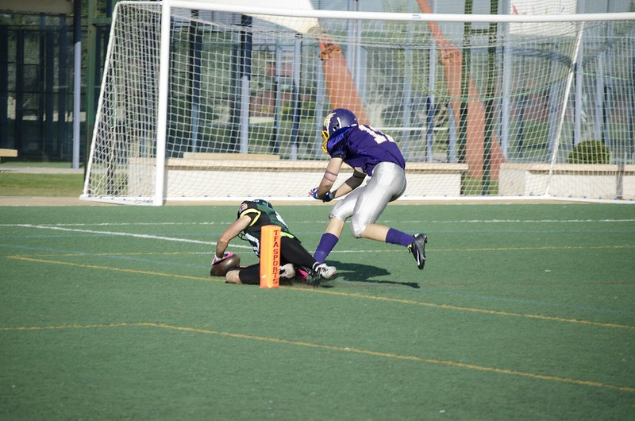
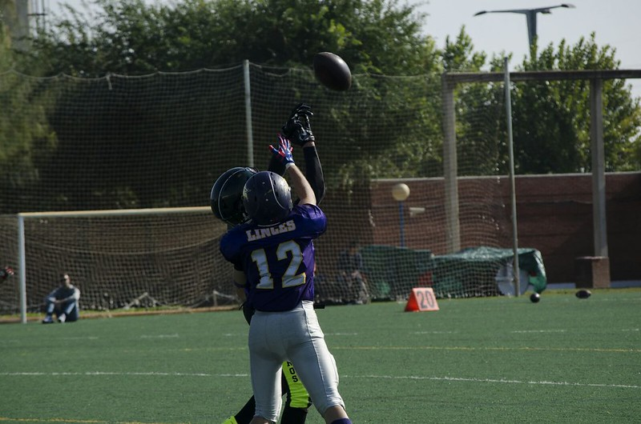
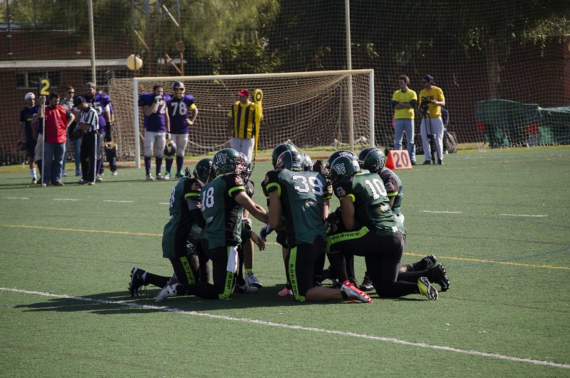
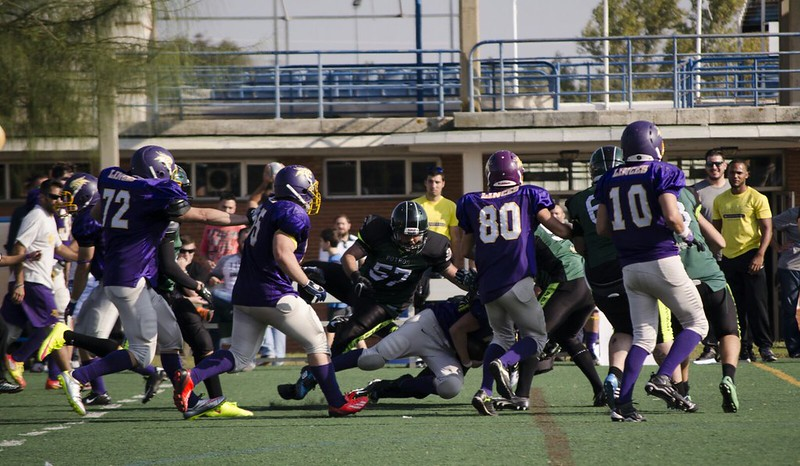

We ride together, we die together, quienes somos !?

El Club Deportivo Potros de Fútbol Americano tiene como razón de ser la práctica, el fomento
y la difusión del fútbol americano en el municipio de Fuengirola, así como en los municipios
cercanos de la Costa del Sol, como medio de transmisión de los valores propios del deporte.
Para ello, el club toma parte en competiciones deportivas de ámbito regional y participa y colabora
en diversos eventos y exhibiciones de carácter promocional (tanto de organización propia como
compartida con otras entidades o firmas comerciales).
Esta actividad puede ser llevada a cabo gracias a la inestimable ayuda de los integrantes del
equipo, que rondan actualmente el medio centenar, y provienen de todos los puntos de la geografía
malagueña.
Objetivos
-
El establecimiento definitivo de una estructura deportiva sólida que dé acogida a un mayor
número de jugadores y miembros, así como de voluntarios, aficionados y entidades
colaboradoras, que permita participar en competiciones a nivel nacional y continental.
-
La colaboración con centros educativos de Fuengirola y los municipios colindantes para la
enseñanza y difusión del fútbol americano, así como su variante sin contacto de flag
football.
-
La creación de una Escuela Municipal y una estructura de cantera en la que puedan iniciarse
los jóvenes en la práctica del fútbol americano al mismo tiempo que puedan complementar su
formación personal.
DERROTA CON MEJORÍA
Segunda cita de altura en una semana para los Fuengirola Potros, que en esta ocasión visitaron el
José Barnés de Murcia para medirse contra los locales Cobras. Los actuales subcampeones de España
vencieron por 41-0 a unos Potros que fueron de menos a más y dieron mejores sensaciones que en su
último compromiso ante LG OLED Las Rozas Black Demons.
Los ajustes a un lado y otro del
balón realizados durante la semana dieron frutos desde el inicio, cerrando bien la carrera interior
murciana durante todo el partido y utilizando un buen balance de carrera y pase en ataque para
moverse con mejor fluidez que en otras citas. Sin embargo, la ofensiva negra, liderada por el
quarterback norteamericano Adam Salvadori, no tardó en encontrar la zona de anotación con un pase a
Francisco Javier Martínez y el posterior punto extra (7-0).
En el segundo cuarto los Potros, ayer de blanco por primera vez en su historia, transmitieron sus
peores sensaciones de la tarde. A pesar de que el cuarto comenzó con la intercepción de Manu
Carrizosa y anulando el juego de carrera de Cobras, los Potros encontraban dificultades para
replicar en el marcador. Salvadori, ya fuera por vía aérea o improvisando con la carrera encontraba
el hueco en la malla defensiva malagueña que lidera el panameño Eduardo Simon. En este cuarto el
espigado quarterback encontraría la zona de anotación con dos carreras, y conectó con su compatriota
Alex Holmes para otros siete puntos más (27-0). A la vuelta de la caseta, los costasoleños
recobraron sensaciones y pusieron las cosas más duras sobre el césped. Ismael Boumhir forzó otra
recuperación de balón en defensa, pero en ataque a menudo contaron con una posición de campo
comprometida con la que encontraron dificultades para anotar. Con el reloj a cero en este parcial,
Murcia sumó siete puntos más al electrónico con la recepción de Alex Holmes y la patada de Francisco
Javier Martínez.
En el cuarto y último período se vieron los mejores minutos en ataque de los Potros. A lomos de las
carreras de Juanki Cortés y Gabriel Cantero, movieron la pelota en un drive largo y persistente
hasta las inmediaciones de la red zone rival, pero una pérdida de balón frustró la ocasión más clara
de la tarde para sumar puntos. Cobras en el turno siguiente replicó llegando a la zona de anotación,
y convirtiendo un cuarto y goal con la tercera recepción para touchdown de Alex Holmes (41-0). Los
malagueños aún tuvieron una última bala para no irse de vacío, con una bonita jugada de engaño que
recepcionó David Chaves para más de 30 yardas, pero la última jugada con el reloj agotado fue parada
por la línea defensiva local.
La Marea Verde tendrá una semana de descanso para recuperar fuerzas y preparar su próximo encuentro.
La cuarta jornada se celebrará dentro de dos semanas, el 24 de febrero, y los Potros recibirán en
casa a Mallorca Voltors, rival de la Conferencia Noreste que llegará a Fuengirola con idéntico
balance de victorias y derrotas (1-2), tras haber cedido en sus dos últimos partidos contra Valencia
Firebats (14-13) y Badalona Dracs (7-48).
HISTORIA
Fundado en 2011, originalmente con sede en el municipio de Coín, el Club Deportivo Potros dio sus
primeros pasos en el terreno de juego de la Ciudad Deportiva José Burgos Quintana.
Sin embargo, no fue hasta comienzos del año 2012 cuando se reunió la cantidad necesaria de jugadores
y recursos para competir, cuando lo hizo en sendos encuentros amistosos en terreno local contra
Almería Barbarians y Córdoba Templars en los meses de marzo y abril.
El objetivo de esos partidos no fue otro que la preparación para la Liga Andaluza II que transcurrió
entre los meses de mayo y julio, con formato de liguilla a doble vuelta y partido final entre los
dos mejores clasificados, en la que tomaron los tres equipos andaluces que no aún formaban parte de
competición nacional: Almería Barbarians, Córdoba Templars y Coín Potros.
Tras un comienzo difícil, el equipo se sobrepuso y terminó la temporada con un balance de una sola
derrota y cuatro victorias en partido oficial, estas últimas todas consecutivas, proclamándose
campeón en la final ante Almería Barbarians por un resultado de 19-6. En el apartado de estadísticas
finalizó también como absoluto dominador, liderando las estadísticas de anotación y puntos
recibidos, así como el premio al mejor jugador del torneo, entregado al corredor Carlos Chaves.
Galería de imágenes






Tienda online
⛏️ En desarrollo ...